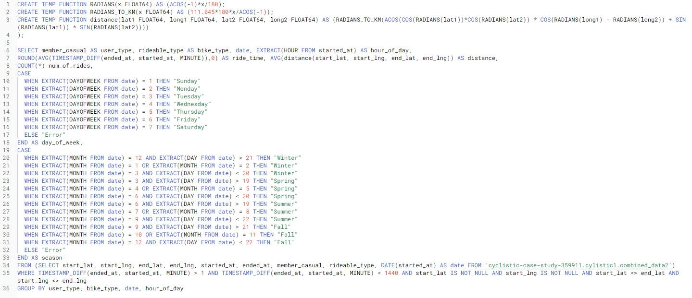

Project: Bike-sharing
Introduction-
As part of the Google Data Analytics Professional Certificate, I completed a case study where I was asked to solve a business task for a fictional bike-sharing company called Cyclistic. Cyclistic is a bike-sharing company based in Chicago. Their business model allows users to use more than 5 800 bikes within a network of 600 docking stations across Chicago. Cyclistic offers both single-ride passes, full-day passes and annual memberships. Customers who purchase single-ride or full-day passes are referred to as casual riders.
Cyclistic’s finance analysts have concluded that annual members are more profitable than casual riders. The director of marketing believes therefore that the company´s future success depends on maximizing the number of annual memberships. She has therefore set a clear goal: designing marketing strategies aimed at converting casual riders into annual members. Three questions will guide the future marketing program:
1. How do annual members and casual riders use Cyclistic differently?
2. Why would casual riders buy Cyclistic annual memberships?
3. How can Cyclistic use digital media to influence casual riders to become members.
We are assigned to answer the first question and to produce a report with the following deliverables:
1. A clear statement of the business task
2. A description of all data sources used
3. Documentation of any cleaning or manipulation of data
4. A summary of your analysis
5. Supporting visualizations and key findings
6. Your recommendations based on your analysis
The business task
Our business task is to understand how annual members and casual riders use Cyclistic differently to recommend how casual riders could be converted into annual members.
Data sources used & preparation
I will be using user data from January to December 2021. Each data set is in csv-format and describes every ride logged by users in that period. I will be using Excel and SQL to process and analyze the data, while I’ll use Power BI for visualizations. There are some facts and constraints about the data we have to keep in mind however. “Classic bikes” were previously called “docked bikes” and refer to the same thing. Classic bikes must start and end at a docking station. Electric bikes on the other hand have a bike lock, which allows users to park them anywhere close to a docking station. Also, the data should not contain any trips shorter than a minute or longer than a day. Any trips that do not meet these constraints are unlikely to be customer data and are more likely tests or maintenance trips conducted by Cyclistic. These bikes could also be stolen. This data should therefore be removed.

Cleaning the data
To process the data, I used SQL. First, I created a dataset and imported all 12 csv files, one for each month, as separate tables. Then, I combined these into one table using the UNION ALL-command. This table now has a total of 5 595 063 rows. This means that, before we have processed the data, almost 5,6 million trips were registered through Cyclistic in 2021. The new table contains the columns seen in the picture to the right. After familiarizing myself with the data and running queries on each column, I made the following conclusions:
1. Ride_id is a primary key with only unique values and each string containing 16 characters.
2. Rideable_type contains three distinct types of bikes: the classic bike, the electric bike and the docked bike. Since the classic bike and the docked bike refer to the same bike-type, I will convert all “docked bikes” to “classic bikes” using the REPLACE-command.
3. Started_at and ended_at refer to the date and time that a bike trip started or ended. I will add a column with the trip duration in minutes, using the TIMESTAMP_DIFF-command. Then, I will simply filter out any trips with a minute length of less than 1 or more than 1440 (one day).
4. Start_station_name and end_station_nameare the names of docking stations. Since classic bikes must have a start and end station, I will remove any rows with the values NULL for these parameters with the DELETE-command. For electric bikes, I will change NULL values to “Bike lock”. I will also use the TRIM-command to remove any redundant spaces.
5. Start_station_id and end_station_id consist of values with different string lengths and as I do not consider them relevant, I will ignore these columns.
6. Start_lat, start_lng, end_lat and end_lng show the coordinates of the starting and ending locations of each bike ride. I will remove all trips with null values in these columns.
7. Member_casual indicates whether the customer was a "casual rider" or an "annual member".
Analysis summary
After cleaning the data, it’s a good thing to take a step back and remind us of the business task at hand: “how do annual members and casual riders use Cyclistic differently?” My query should thus contain information that could reveal any user differences between these groups. One interesting aspect to look at in order to reveal any differences, are how users use Cyclistic during the year, during a week and during a day. Therefore, I will include a date, day and hour-column in my query, in addition to creating a “seasons”-column. An important thing to keep in mind is that these columns are extracted from the “started_at”-column. The full query I uploaded to Power BI contained 34 000 rows and looked like this:
To keep my query small and simple, I chose to do separate queries to extract the geodata. I chose to only look at the 50 most popular start and end stations for both members and casual riders. Then, I ran four small sepearate queries on these.
Visualizations and key findings
First, I looked at some general stats. After cleaning the data, I was left with around 5 million rides 2021: 2.8 million rides by members and 2.2 million by casual riders. For the entire population, the average length of one trip is around 17 minutes. For members however, the average length is just below 13 minutes. For casual riders it is more than 21 minutes.
This finding made me question whether casual riders also ride their bikes further. To answer this, I used the Haversine formula (see my full query) to calculate the average distance between each start and end station. This does not show us the actual distance ridden, but it gives us some indication of the distance of one ride. It shows that the average distance between start and end station for the entire population is around 2.35 kilometers. For casual riders this is around 2.4 kilometers, for members 2.31 km.

Around 3.3 million rides were conducted with a classic bike, while 1.7 million rides were conducted with an electric bike. Electric bikes seem to be slightly more popular amongst casual riders. There is one important thing to remember however; we are looking at aggregated data here. Our data does not break down the story for an average member or casual rider. For instance, a smaller number of members, preferring the classic bike, could skew the data into a certain direction if they use our service a lot. It may look like the average member prefers classic bikes, while this may not be the case.
The line chart in the lower left corner of my dashboard shows the number of rides per month in 2021. During most of the year, the majority of rides are conducted by members. From the end of June to August however, rides by casual riders exceed member rides. When we filter for “member” and “casual” and look at the seasonal pie chart (in the middle of the dashboard), it seems that summer is a clear favorite amongst casual riders. In fact, almost half (49%) of all rides conducted by casual riders were during the summer. Amongst members, this number is 38 percent, and it seems members are more devoted to biking year-round.
When we do the same with the other pie chart, we notice that Saturday and Sunday are the most popular days amongst casual riders for using our service. In fact, they conduct 41 percent of all rides during the weekend. Amongst members however, the most popular days are from Tuesday to Friday. Only 26 percent of their rides happened during the weekend. Looking at the bottom right line chart and filtering for weekdays only, we notice another clear pattern. Members seem to use our service most during two time periods of the day: around 7 to 9 AM and 5 to 7 PM. In fact, around 25 percent of all rides amongst members are started between 7 and 9 AM. This time of day is also most popular amongst casual riders, but the pattern is not as clear.

Finally, lets take a look at our geodata. I decided to plot the 50 most popular start and end stations for casual riders and members in four different maps. The results are shown below. If we look closely, we notice that there is a pattern here. It seems casual riders congregate their bike trips along the coastline, while members seem to be more spread out around what seems to be urban areas.
Executive summary
Although the evidence is inconclusive, there are several indications that casual riders and members use Cyclistic quite differently. It seems that members use this service to commute, while casual riders use it for leisure. Casual riders use more time per ride, but they do not seem to cover more distance during this time. I would assume that casuals are making most out of their time with their single use passes. They might not ride straight from point A to B are not in a hurry. Casual riders use our service most during the summer and during weekends. They seem to congregate their trips along the coastline of Chicago, which is an area that is full of beaches, parks and trails among other kinds of leisure attractions. This again underlines our suspicion that they use this service to a larger degree for leisure.
Members seem to be more devoted to biking during weekdays and year-round. The use the service most around rush hours, which might indicate they use the bikes to commute to and from work. This idea is strengthened by the fact that the most used stations amongst members are located in urban areas. However, we must again keep in mind that these charts are based on the entire population and do not break down the story for an average casual or member.
Recommendations
When we take a step back again and remind ourselves of the business task at hand, I believe there are several next possible steps to take following our analysis.
One option is to reiterate. In order to uncover relevant marketing opportunities, we could collect more meaningful data, analyze it more thoroughly and test our hypothesis. In this case, we should redefine the problem: what drives casual riders and members to be different? What do they get out of the experience and what is important to each user group? We should then sample and collect more relevant data, for instance through surveys. We should aim at capturing qualitative data (about user motivations, routines etc.) and demographic data. To underline why demographic data is so valuable, we should remember that someone’s income, address, age and BMI is very relevant for their biking capacity and what membership they can afford. Finally, we should complete the picture with more analysis. This could expose more concrete connections behind distinctive behaviors and uncover any major opportunities or obstacles to converting casual riders to members. The disadvantage of this approach is that it will cost more time and resources before we can initiateany measures. The advantage on the other hand, is that we lower the risk of introducing the wrong measures as we first create a more thorough understanding of the current situation.
A second option is to forge ahead. We could decide to apply what we know from our initial findings to kickstart and form the basis of Cyclistic´s marketing conversion strategies. We should then consider different alternatives to conversion, such as new services and pricing models. We should focus on factors affecting casual riders` willingness to pay. Following our analysis, we could for instance consider introducing a weekend pass. This could be a yearly subscription providing an unlimited pass for every weekend. We could also focus on communicating statistics that matter to casual riders. We could state that by using Cyclistic daily, you save an x amount of money on gas, you burn an x amount of calories or you save the planet from an x amount of co2. Finally, we could also explore premium pricing-models that provide additional privileges for members. One privilege could be to be able to reserve a bike during periods of high demand, for instance during the morning rush hour. This will add value to our service through increased predictability for those who use Cylistic to commute to and from work. Regardless of how we choose to go forward, we must keep in mind that an increase in memberships will increase our cost through more usage. I would therefore recommend conducting a cost-benefit analysis regardless of what measures we would consider implementing.